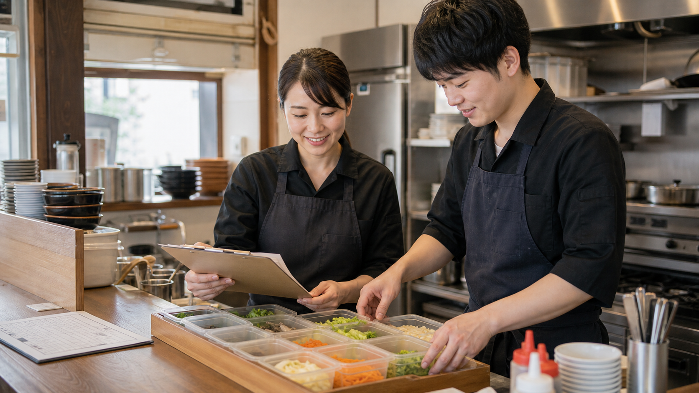

他社の改善事例 / 飲食店・仕込み計画
勘で決めていた仕込み量を、予約・天気・在庫を見た確認リストにする
開店前に予約表・天気・前週売上・残り食材を見比べて迷っていた仕込み量を、店長が確認できる候補リストにします。AIは増やす理由、抑える理由、不足しそうな食材、人手が薄い時間帯を先に並べ、店長は味・品質・廃棄リスク・スタッフ配置を見て最終判断します。

先に結論
店長の勘を消すのではなく、勘を確かめる材料を開店前にそろえます。
飲食店では、営業前の30分に、予約数、天気、残り食材、出勤メンバーの確認が一気に重なります。
店長は電話を受け、納品を確認しながら、「ランチ用のご飯や副菜を増やすか」「雨なら仕込みを抑えるか」を頭の中で抱えていました。
予約表、天気予報、同じ曜日の売上、在庫メモ、スタッフ予定をAIへ渡し、仕込み量候補、不足食材、混みそうな時間帯、配置の注意点に分けます。
最後に店長が、味、品質、廃棄リスク、当日の客層、スタッフの慣れ具合を見て調整します。
仕事の変化
営業前に探していた材料と、店長が最後に決める判断を分けます。
現場で起きていたこと
営業前、店長は予約表、前日残り、納品予定、スタッフチャットを一つずつ開いていました。手は動いていても、今日のピーク、不足しそうな食材、人を厚くしたい時間帯が一目で見えず、不安が残ります。
変えたこと
AIへ渡すのは、予約表、天気、同じ曜日の売上、在庫メモ、納品予定、出勤予定です。AIはそれらを読み、仕込み量候補、不足しそうな食材、混みそうな時間帯、シフト上の注意点に分けます。
改善後に残るもの
改善後、店長は白紙から考えず、AIが並べた候補を見て「増やす・減らす・そのまま」を決めるところから始められます。判断が早まる分、厨房の段取りとスタッフへの声かけに戻れます。
改善後の実感
探してから決めるのではなく、候補と注意点を見て決められます。
営業前に材料を探す
予約表、スタッフチャット、紙の在庫メモ、納品予定、曜日別売上を店長が行き来していました。
候補から判断する
仕込み量候補、ピーク予測、不足食材、スタッフ配置の注意点がそろい、店長は確認と調整から始められます。
営業前の迷いを減らす
仕込み確認が早く終わると、厨房の段取り、スタッフへの声かけ、客席の確認に時間を戻せます。
現場の一場面
10時15分、店長は仕込み量を決める前に予約表を見直していました。
10時15分、開店前の厨房で、店長は予約表と天気を見ながらランチの仕込み量を迷っていました。
作業台には予約表、前日の残りメモ、納品伝票、スタッフの出勤予定が並んでいました。
そこへ予約変更の電話が入り、納品確認も重なり、仕込みを増やすべきか抑えるべきかを落ち着いて考える時間がなくなります。
以前は、予約表を開き、同じ曜日の売上を探し、紙の在庫メモとスタッフチャットを行ったり来たりしていました。
改善後は、予約表、天気、前週売上、在庫メモ、出勤予定をAIへ渡します。
AIは「増やす候補」「抑える候補」「不足しそうな食材」「人手が薄い時間帯」をまとめ、店長が理由を見比べて判断できる形にします。
最後に店長が、味と品質、廃棄リスク、当日の客層、スタッフの慣れ具合を見て調整します。
店長は探し物に追われる時間を減らし、盛り付けの段取り、スタッフへの声かけ、客席確認に戻れます。
改善のイメージ
改善後は、仕込み量を決める前に見る材料がまとまります。
増やす理由を見比べる
予約数、天気、前週売上、残り食材が同じ画面に並ぶため、仕込みを増やす理由と抑える理由を見比べられます。
仕込み表を確認する
食材ごとの仕込み量と残り食材が見えるため、店長は足りないものから確認できます。

注意点を先に見る
人手が薄い時間帯、不足しそうな食材、増やす候補をチェックリストで確認できます。
導入前
導入前は、仕込み量とシフト確認の前に資料探しと確認漏れの不安がありました。
予約表、スタッフチャット、紙の在庫メモ、納品予定、曜日別売上を店長が行き来していました。
ピーク時間、不足食材、人を厚くしたい時間帯を、店長が頭の中で組み合わせていました。
確認に時間がかかるほど、厨房の段取りやスタッフへの声かけが短くなっていました。
仕事の流れ
仕込み量とシフト確認では、AIが材料を整え、人が最後に判断します。
予約表、天気、曜日別売上、在庫メモ、納品予定、出勤予定をそろえます。
増やす候補、抑える候補、不足しそうな食材を並べます。
混みそうな時間帯とスタッフ配置の注意点を出します。
仕込み量、味、品質、廃棄リスク、当日の客層、スタッフ配置は店長が見ます。
人とAIの分担
AIが整える材料と、店長が決める判断を分けます。
AIに渡しやすい作業
- 予約・天気・過去売上の整理
- 仕込み量候補
- 不足食材の抽出
- シフト注意点
人が見るべき判断
- 味と品質の判断
- 仕入れ・廃棄リスクの判断
- 当日の現場判断
- スタッフ配置